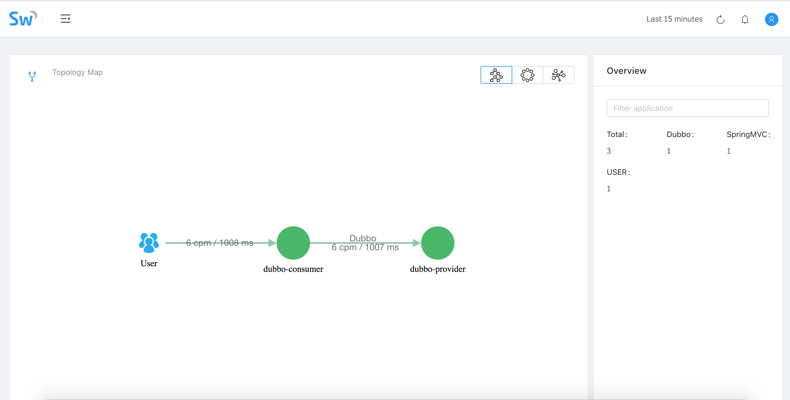
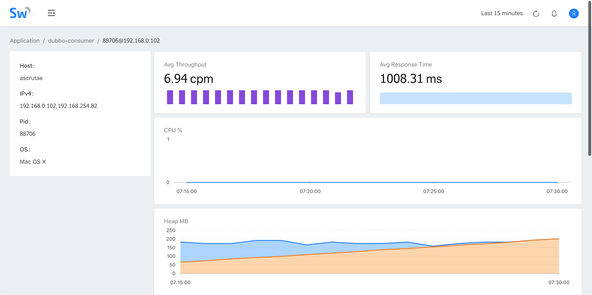
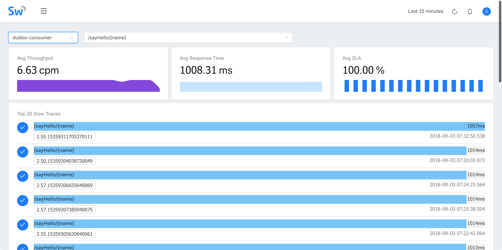
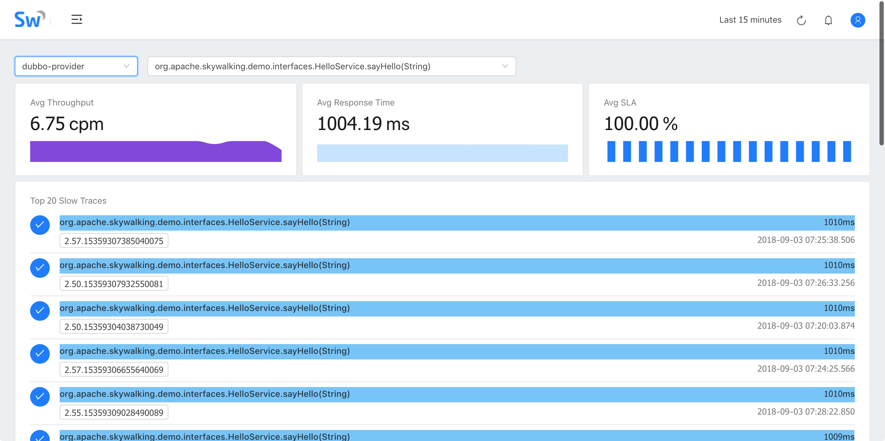
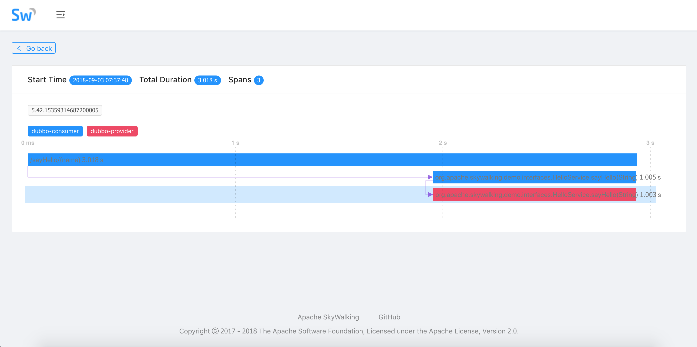

使用Apache Skywalking (Incubator) 做分布式跟踪
Apache Skywalking(Incubator)简介
Apache Skywalking(Incubator) 专门为微服务架构和云原生架构系统而设计并且支持分布式链路追踪的APM系统。Apache Skywalking(Incubator)通过加载探针的方式收集应用调用链路信息，并对采集的调用链路信息进行分析，生成应用间关系和服务间关系以及服务指标。Apache Skywalking (Incubating)目前支持多种语言，其中包括Java，.Net Core，Node.js和Go语言。
目前Skywalking已经支持从6个可视化维度剖析分布式系统的运行情况。总览视图是应用和组件的全局视图，其中包括组件和应用数量，应用的告警波动，慢服务列表以及应用吞吐量；拓扑图从应用依赖关系出发，展现整个应用的拓扑关系；应用视图则是从单个应用的角度，展现应用的上下游关系，TopN的服务和服务器，JVM的相关信息以及对应的主机信息。服务视图关注单个服务入口的运行情况以及此服务的上下游依赖关系，依赖度，帮助用户针对单个服务的优化和监控；调用链展现了调用的单次请求经过的所有埋点以及每个埋点的执行时长；告警视图根据配置阈值针对应用、服务器、服务进行实时告警。
Dubbo与Apache Skywalking(Incubator)
编写Dubbo示例程序
Dubbo实例程序已上传到Github仓库中。方便大家下载使用。
API工程
服务接口：
package org.apache.skywalking.demo.interfaces;
public interface HelloService {
String sayHello(String name);
}
Dubbo服务提供工程
package org.apache.skywalking.demo.provider;
@Service(version = "${demo.service.version}",
application = "${dubbo.application.id}",
protocol = "${dubbo.protocol.id}",
registry = "${dubbo.registry.id}", timeout = 60000)
public class HelloServiceImpl implements HelloService {
public String sayHello(String name) {
LockSupport.parkNanos(TimeUnit.SECONDS.toNanos(1));
return "Hello, " + name;
}
}
Consumer工程
package org.apache.skywalking.demo.consumer;
@RestController
public class ConsumerController {
private static int COUNT = 0;
@Reference(version = "${demo.service.version}",
application = "${dubbo.application.id}",
url = "dubbo://localhost:20880", timeout = 60000)
private HelloService helloService;
@GetMapping("/sayHello/{name}")
public String sayHello(@PathVariable(name = "name") String name) {
if ((COUNT++) % 3 == 0){
throw new RuntimeException();
}
LockSupport.parkNanos(TimeUnit.SECONDS.toNanos(2));
return helloService.sayHello(name);
}
}
部署Apache Skywalking(Incubator)
Apache Skywalking(Incubator）共提供两种部署模式：单节点模式和集群模式，以下为单节点模式部署步骤，集群模式部署详情参考文档。
依赖第三方组件
- JDK8+
- Elasticsearch 5.x
部署步骤
- 下载 Apache Skywalking Collector
- 部署ElasticSearch
- 修改elasticsearch.yml文件，并设置
cluster.name设置成CollectorDBCluster。此名称需要和collector配置文件一致。 - 修改ES配置
network.host值，将network.host的值修改成0.0.0.0。 - 启动Elasticsearch
- 修改elasticsearch.yml文件，并设置
- 解压并启动Skywalking Collector。运行
bin/startup.sh命令即可启动Skywalking Collector
启动示例程序
在启动示例程序之前，执行编译打包的命令:
./mvnw clean package
启动服务提供端
java -jar -javaagent:$AGENT_PATH/skywalking-agent.jar -Dskywalking.agent.application_code=dubbo-provider -Dskywalking.collector.servers=localhost:10800 dubbo-provider/target/dubbo-provider.jar
启动服务消费端
java -jar -javaagent:$AGENT_PATH/skywalking-agent.jar -Dskywalking.agent.application_code=dubbo-consumer -Dskywalking.collector.servers=localhost:10800 dubbo-consumer/target/dubbo-consumer.jar
访问消费端提供的服务
curl http://localhost:8080/sayHello/test
Skywalking监控截图：
首页

拓扑图

应用视图

JVM信息 
服务视图
服务消费端： 
服务提供端： 
Trace视图

Span信息：

告警视图